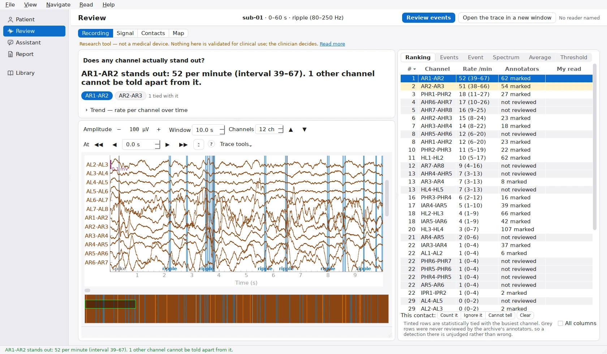
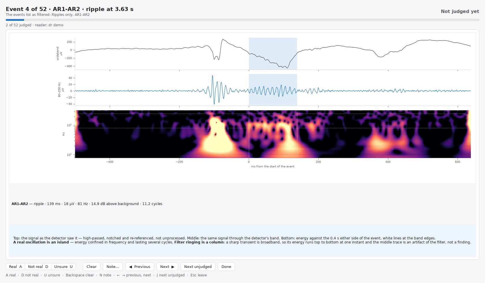
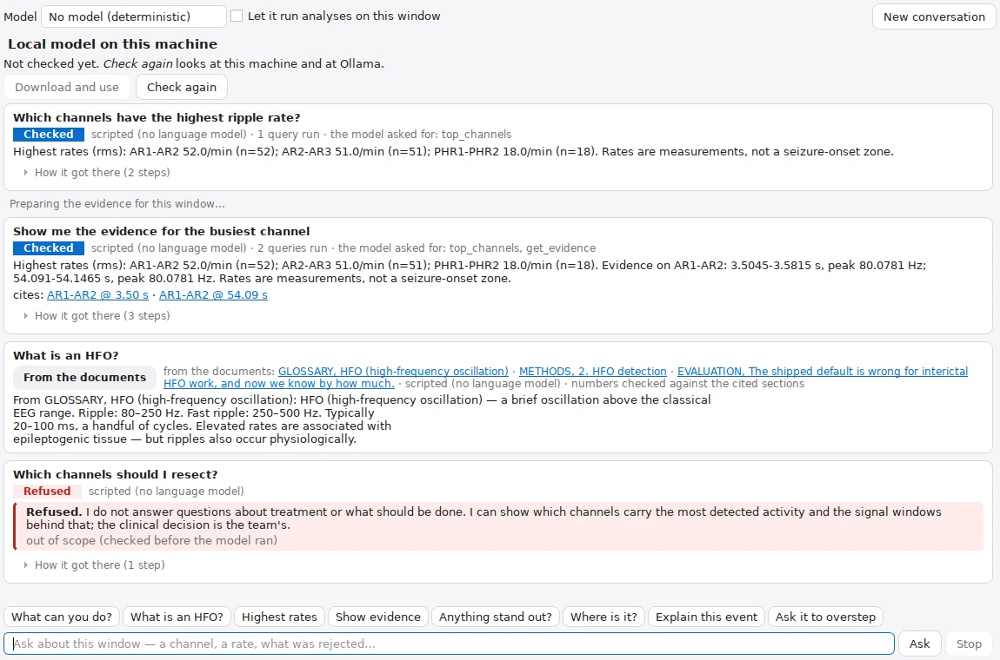
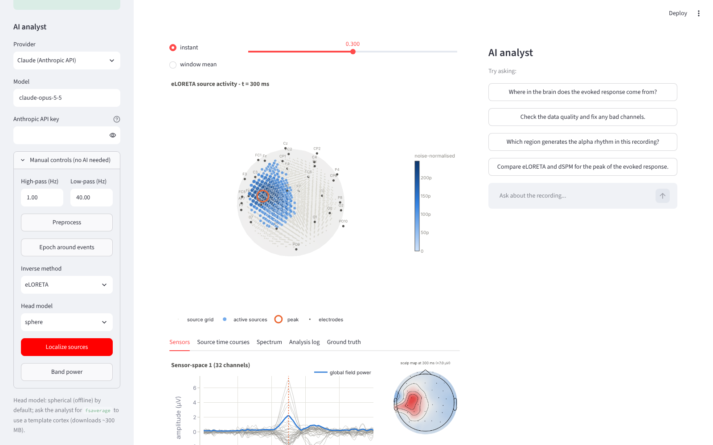

Research
I lead research on machine learning and AI for brain–machine interfaces (BMI) and brain–computer interfaces (BCI) at Nazarbayev University’s Brain–Machine Intelligence Lab. I study how decoders trained on limited data generalize across people and recording conditions, and I work with collaborators on assistive systems and epilepsy research.
Research areas
- Generalizable EEG decoding
Develop and evaluate decoders for new users, with the aim of reducing individual calibration.
- Machine learning for neural signals
Design and compare neural signal models, from statistical features to compact convolutional and transformer architectures.
- BCIs for communication and interaction
Use P300 and other evoked EEG responses to study brain-driven spelling and interaction.
- Clinical NeuroAI and epilepsy
Study seizure activity and candidate markers in intracranial EEG and build tools that trace findings to the signal.
- Neurorehabilitation and assistive robotics
Connect neural and muscle signals to real-time control of assistive devices, including upper-limb exoskeletons.
- fNIRS and hemodynamic decoding
Use functional near-infrared spectroscopy to study how hemodynamic responses vary across cognitive and motor tasks.
- Developmental and social neuroscience
Collaborate on studies of neural signals during natural infant behavior and social interaction.
Explore the lab’s research and demonstrations
Recent research
Onset Review for intracranial EEG
I lead a 2025–2027 Nazarbayev University project on machine learning for intracranial EEG in epilepsy. One result is Onset Review, an open-source desktop application and Python library for studying high-frequency oscillations, interictal discharges, and seizure-onset activity. Researchers can inspect the signal around each candidate event, record independent review judgments, and see which events and analysis settings produced a reported measurement. An optional local open-weight language model answers questions about saved analyses and links its answers back to signal windows and recorded measurements. University project record · Onset Review documentation · Source code
We evaluated the methods on public intracranial EEG recordings. In two cohorts, we compared a seizure-onset index with clinician-marked onset regions and repeated the analysis in pre-onset windows as a control. An exploratory analysis of fast-ripple activity and surgical outcomes was sensitive to the recording window in a small cohort. The project publishes the validation scripts and tables for others to inspect and reproduce. Onset Review is research software. Validation methods and results






EEG Source Explorer
This open research prototype combines MNE-Python source imaging with an interactive 3D view. Users can inspect preprocessing, head models, source estimates, and the analysis log. A synthetic recording with known sources lets users compare estimated locations with a reference. The app also offers an AI-assisted workflow for running and explaining the analysis. EEG Source Explorer repository


Neural signal processing and learning across users
A new BCI user should spend as little time as possible calibrating the decoder. My early work with Amin Zollanvari examined how to learn discriminative spatial and spectral features from event-related potentials. We subsequently studied how to build P300 decoders that transfer across users with data from relatively few training participants. Spatio-spectral ERP features · Subject-independent P300 decoding
For motor imagery, my collaborators and I developed compact convolutional and multiscale transformer models. Our compact model combines local EEG features with temporal attention and uses fewer parameters than several comparison architectures. Our 2026 Swin Transformer study uses hierarchical attention to learn EEG patterns at multiple scales. These studies evaluate performance with participants held out of training, which tests an important step toward reducing individual calibration. Compact model and evaluation · Implementation · Multiscale model
Real-time interfaces and assistive robotics
Decoding is one part of a BCI. The system also has to turn uncertain signals into commands that a device can act on. In our telepresence system, we used EEG to select actions and programming by demonstration to teach a humanoid robot how to execute them. This reduced the need for users to specify each motion through the interface. BCI-driven telepresence
During my NIH-funded postdoctoral work at the University of Houston, I contributed EEG source analysis, experimental data collection, and exoskeleton operation to a collaboration with TIRR Memorial Hermann. In the published feasibility study, four chronic stroke survivors used an EEG-based interface to control an upper-limb exoskeleton in real time. At Nazarbayev University, I later served as principal investigator on a 2021–2023 project to integrate EEG control with an exoskeleton for upper-limb stroke rehabilitation. Exoskeleton feasibility study · Nazarbayev University project
Open EEG code and benchmarks
- Motor imagery EEG with MNE-Python and PyTorch. Notebooks for preprocessing, visualization, and CNN training on public EEG datasets. Includes pooled and participant-specific examples. Motor imagery pipeline
- P3Net. Reproduction code for our systematic comparison of neural network architectures for P300 event-related potential decoding. P3Net repository
Research directions
- Decoding with less calibration. Develop neural representations that use signal structure, such as the timing of event-related potentials and the spectral content of sensorimotor rhythms. Test transfer separately across users, recording sessions, and datasets to identify where new calibration data help most.
- Embedded AI for neural sensing. Adapt compact decoders to low-power hardware. Measure accuracy on unseen users alongside end-to-end latency, memory, and energy, then use those measurements to decide where quantization and other model changes help.
- Closed-loop interfaces for rehabilitation. Develop systems that combine decoded motor intent with assist-as-needed robot control. Study how decoder confidence and the timing of assistance affect the interaction, starting with feasibility measures.
- AI for epilepsy research. Develop models to detect seizures and characterize seizure onset in intracranial EEG. Evaluate candidate markers such as high-frequency oscillations across patients, recording windows, and datasets. Extend Onset Review so researchers can trace model findings back to the original signal. Onset Review research